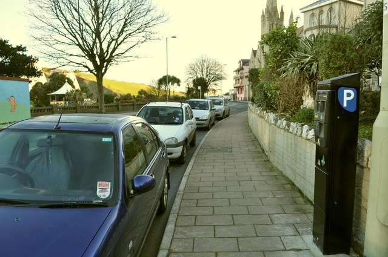
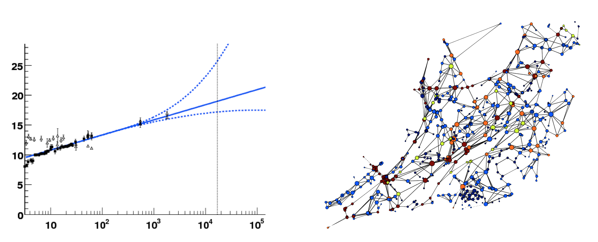

Cities, data and
connected objects
the way to autonomous driving (living ?)
not research
not corporate
not artisan
on street parking

paper
computer
Contextual modeling

new york signs
a startup

Feature engineering
engineer ↭ hacker
privacy is
a "real" issue
Sigfox
is great when you can
process the data in the sensor
Recycling centers

Problems:
- we don't sort well
- we don't reuse
Objectives:
- predict demand
- provide an application
- connect to reusers
Designing a sensor
The sensor should:
- measure affluence
- measure the level of each containers
- low cost
- improvable
Counting the number of cars

The level of each container

→